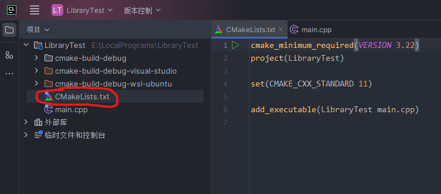

C/C++链接库（准备工作）
简介
库可以说是实际项目中几乎必不可少的内容。在最开始学习编程语言的时候，可能多数人只会接触到可执行文件，那时我们编写的每一个源文件都可以直接编译成程序执行，在多文件编译时最多可能还会接触到可重定向目标文件，即后缀为.o的文件。但对库这个概念，或许心中只有一个模糊的概念。
大家其实都肯定了解一个 C/C++ 的程序从源文件开始的编译过程有 3 步：预处理、编译、链接。
其中链接这一步通常是最容易被我们忽略的，而这一步实际上就会用到我们的库文件。之所以会被忽略，是因为我们学习时所用到的库文件几乎只有标准库文件，而这个标准库文件几乎在所有编译器中都是默认链接的。
本文的组成
本篇主要是为后续文章做铺垫的准备工作部分，主要包括以下几个部分：
- 工具和环境简介
- CLion 添加环境的方法
- CLion 使用不同环境运行程序的方法
- CMake 简介
系列文章
一、工具和环境
实际上是后两篇文章会用到的工具和环境。
Windows + CLion
本文其实已经是第二个版本了，前一个版本实际使用的是 Visual Studio 作为开发工具，但有两个原因导致我更换了 IDE。
首先是 VS 的文件结构不太符合大部分实际开发场景，通常需要自行进行一些额外设置才能使用；
其次是在 VS 中为项目设置多环境测试不太方便。
与 VS 相比，CLion 的目录结构就比较灵活，并且可以为一个项目添加多个测试环境。当然，由于 CLion 项目是基于 CMake 的，所以仅仅使用 CMake 也能达到相同的效果，例如 VS Code + CMake 的组合，但实际开发我还是更倾向于使用 IDE。
-
MSVC
我们不安装 VS，但仍然需要 VS 提供的开发环境，我们可以正常安装包含编辑器在内的 VS，也可以只安装 VS 的负载。
进入 https://visualstudio.microsoft.com/zh-hans/downloads/ 页面，然后我们不要直接选择页面中明显的那些下载按钮进行下载，首先下滑页面，打开用于 Visual Studio 的工具，选择其中的Visual Studio 2022 生成工具进行下载。
安装好之后的过程就跟安装正常的 VS 一样了，选择使用 C++ 的桌面开发负载进行安装即可。
-
WSL + CMake + GCC + GDB
- WSL 即 Windows 上的 Linux 子系统，不用使用其他虚拟机软件安装 Linux 系统。WSL 的优点主要是占用低，其环境便于 Windows 上的工具使用。其安装方式不在此处列出，读者可参考其他教程或等待我后续更新相关教程。
- 安装号 WSL 之后，再在其上安装好必备的 CMake、GCC（gcc、g++）、GDB 等工具。
二、CLion 添加环境方法
首先打开一个 CLion 项目，打开其工具链设置：
需要注意的是工具链设置是一个全局设置，只需要设置一次，以后打开其他项目就是已经设置好的了。
然后按照下图的顺序添加 Visual Studio 的环境（我已经添加好了)。
最后在工具集部分定位到如下图所示的目录位置即可（未用红圈圈出的目录前缀是你的 VS 负载的安装位置)。在正确配置位置之后后续的工具就可以自动识别出来了。
我们按照与添加 MSVC 相同的方法添加另一个环境 WSL，然后在工具集部分选择自己要用来测试的 WSL 系统即可：
如果在这个工具链页面中显示有什么工具没检测到的话，就进入你的 WSL 系统进行下载即可。
三、CLion 使用不同环境编译运行项目方法
我们在完成上一步的工具链配置之后，需要选择一个工具链作为默认工具链，每次新建的项目就将使用该工具链对项目进行编译运行。
如果想要添加配置，则需要在每个项目中单独配置：
首先打开 CLion 设置中的 CMake 配置：
在这项配置中需要添加配置文件，一个配置文件就是一个本项目的运行环境，你可以看到自带有一个配置文件，这是 CLion 自动创建的，这个配置文件使用的工具链是我设置的默认工具链，并不是上述所说的两者中的任意一个。
我们点击工具链的下拉框，选择我们需要的工具链即可，这里我选择 Visual Studio 工具链。
然后，我们再按照下图所示的步骤向项目中添加一个工具链：
其中第 3 步构建类型还是选择 Debug，然后工具链选择 WSL，最后使其类似于下图即可：
最后点击确定就可以了。
如果我们需要切换测试环境，则点击下图所示的位置进行切换即可：
四、CMake 简介
CLion 项目的配置是基于 CMake 的，其核心在于根目录下的一个CMakeLists.txt文件：

这是一个最基础的 CMake 配置文件，CLion 会调用我们刚配置好的工具链中选择的 CMake 工具来解析该文件并按照该文件的指示对项目进行相应处理，我们详细解释一下这四条配置：
cmake_minimum_required(VERSION 3.22)：这一条规定了用来解析该文件的 CMake 工具的最低版本，如果你的工具链中 CMake 版本低于此处声明的版本号，则会解析失败，你要么更新工具链中的 CMake 工具，要么降低此处声明的版本号project(LibraryTest)：本句声明了本项目的名称set(CMAKE_CXX_STANDARD 11)：这是一条设定语句，设定了本项目的 C++ 标准应该是 C++11 标准add_executable(LibraryTest main.cpp)：这条语句的意思是生成一个可执行程序（add_executable），其中需要至少两个参数，其一是该可执行程序的名称，第二项是参与编译该可执行程序的文件名。
这就是最基本的 CMake 配置文件的写法，后续如果遇到新的语句，将在该处单独进行解释。
如果对 CMake 感兴趣，请前往其官网了解：CMake - Upgrade Your Software Build System